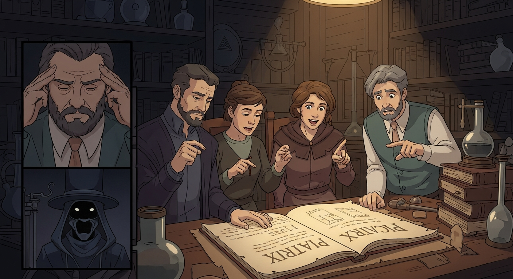
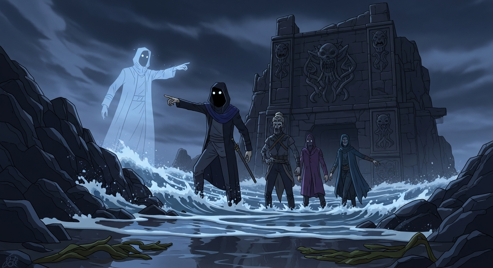

Agrippa, brow furrowed, wrestles with the *Picatrix*. Suddenly, Sledge appears, *Mysterious World* in hand. "Agrippa, look! Clarke mentions 'Rushing Tides'—a veiled reference to *Invisibilia Dei*? Alchemy hidden in plain sight?" A figure, Alexander F, watches from the shadows, *Evil Dead* under his arm. Agrippa thinks, *Am I going at this the wrong way?*

Dee appears. "Agrippa, Alexander F seeks the Rushing Tides, to bend it for personal gain." Flashback: Alexander finds *Evil Dead*, sees intention amplified. I realize the Tides aren't metaphor, but energy. Knowledge alone is nothing; intent shapes it. Alexander moves to seize it. We unite. We safeguard it, study it... together.